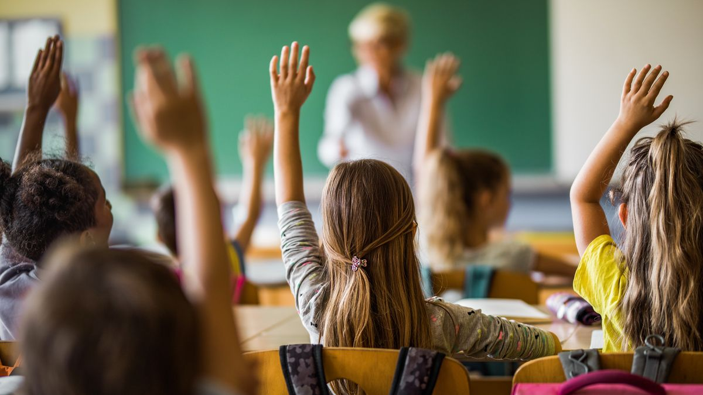

„Vzdělávání je nejmocnější zbraň, kterou můžeme použít k tomu, aby se změnil svět.“
Naším cílem je vytvořit prostor, kde se mladí lidé naučí věci, které jim škola často nedá — od finanční gramotnosti, přes kritické myšlení až po praktické dovednosti do života.
Chceme toho dosáhnout prostřednictvím interaktivních workshopů, online kurzů a projektů, které dávají smysl.
Každý může pomoct – sdílením našich myšlenek, zapojením se do komunity nebo podporou našich aktivit. Společně to zvládneme.

Dětem v dospělosti nepomůže to, že umí řešit nerovnice, znají Pythagorovu větu nebo vědí, kdo byl Karel Hynek Mácha.
Pomůže jim, když pochopí, co je to hypotéka, jak fungují peníze, jak se starat o své zdraví a duševní pohodu, a jak se rozhodovat s rozumem i srdcem.
Chceme, aby škola byla víc o životě — ne o zapamatování informací, které v reálném světě nikdo nepoužije.
Chceme změnit způsob, jakým se mladí lidé připravují na budoucnost. Učíme je přemýšlet, tvořit a nebát se chyb. Věříme, že vzdělávání má být zážitek, ne povinnost.
Jsme skupina studentů, učitelů a tvůrců, kteří věří, že svět může být lepší, pokud začneme učit jinak. Každý z nás přináší svůj pohled — z praxe, z výuky i z technologického světa.
Chceš se přidat nebo máš nápad? Napiš nám!
Napiš zprávu